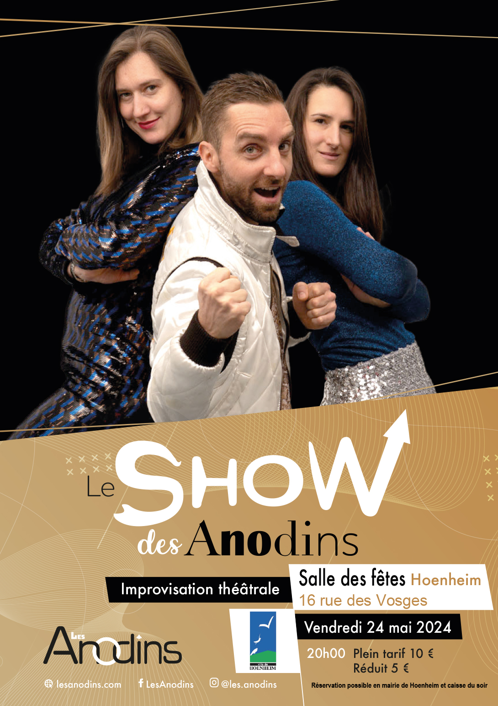

- Cet événement est terminé
Show des Anodins
24 mai 2024 à 20 h 00 min - 22 h 00 min
Navigation de l'événement

Pour leur première dans la cité aux trois corbeaux, les Anodins débarquent avec un spectacle haut en couleurs et en musique. Leur mission : faire vibrer et s’enjailler la salle des fêtes au rythme de leurs improvisations. Bonne humeur, surprise et entrain seront de la partie.
Vous avez envie de battre la mesure pour nos musiciens ?
Alors 3, 2, A… nodins !
Rendez-vous le vendredi 24 mai 2024 à 20h à la salle des Fêtes, 16 rue des Vosges.
Tarifs : 10 € (5 € pour les – 16 ans)
Réservation possible en mairie – Service animations : 03 88 19 23 73 – manifestations@ville-hoenheim.fr ou caisse du soir.